\(T=2\pi \sqrt{\frac{\ell}{g}}\)
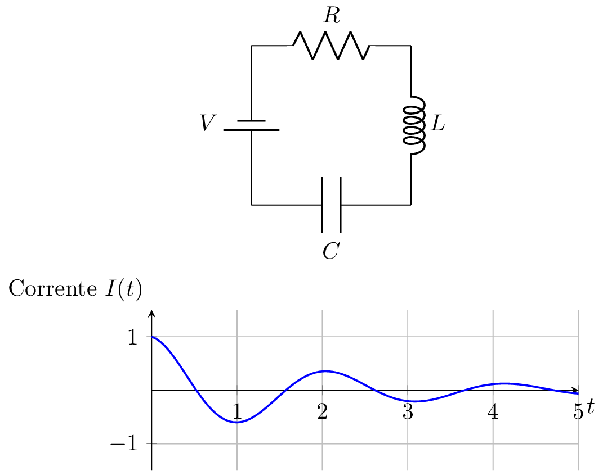
Billah, K.; R. Scanlan (1991).
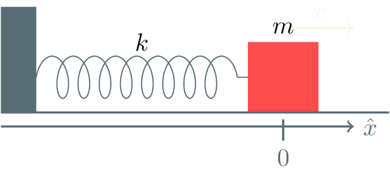
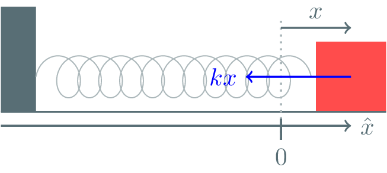
\(\omega\) é chamada de frequência natural de oscilação.
Depende somente de propriedades da massa e da mola. \(x(t) = \alpha \cos(\omega t) + \beta \sin(\omega t)\)
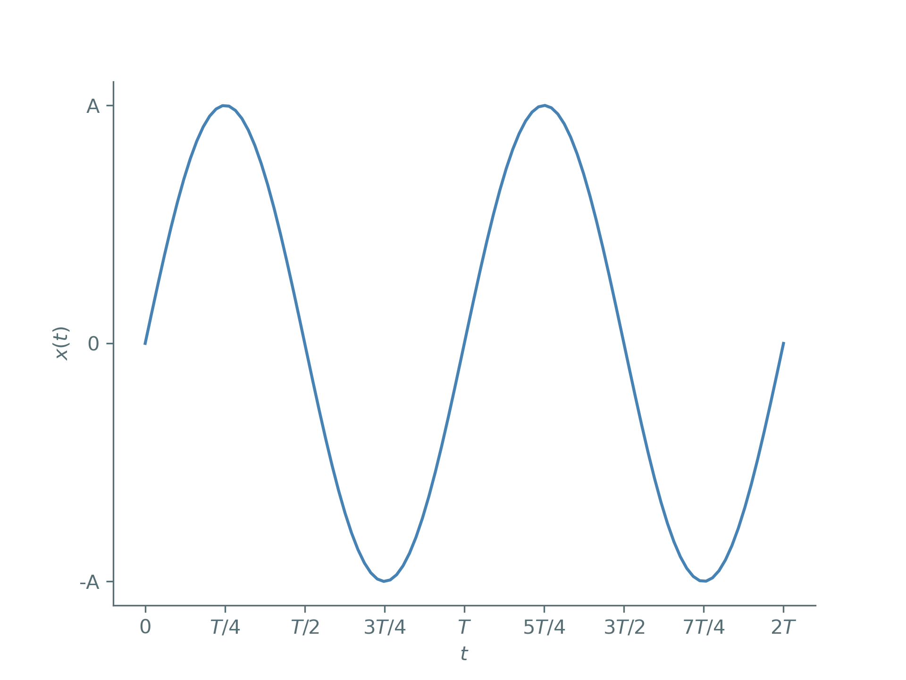
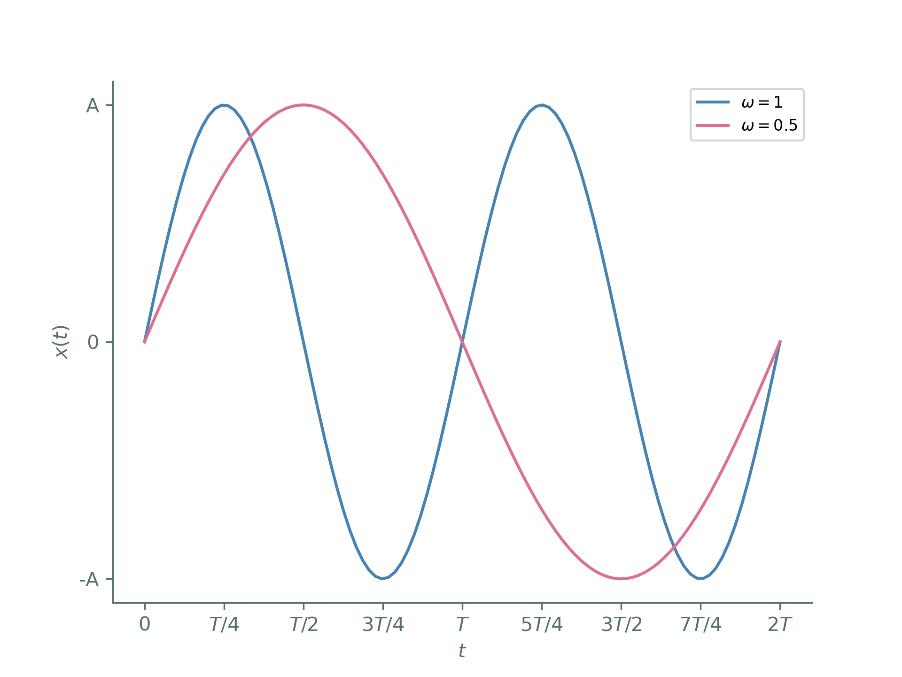
Para identificar \(\alpha \) e \(\beta \), precisamos das condições iniciais. Segunda ordem \(\leftrightarrow\) duas condições.
Há uma maneira mais instrutiva e compacta de escrever a solução.
\(A\) é chamada de amplitude.
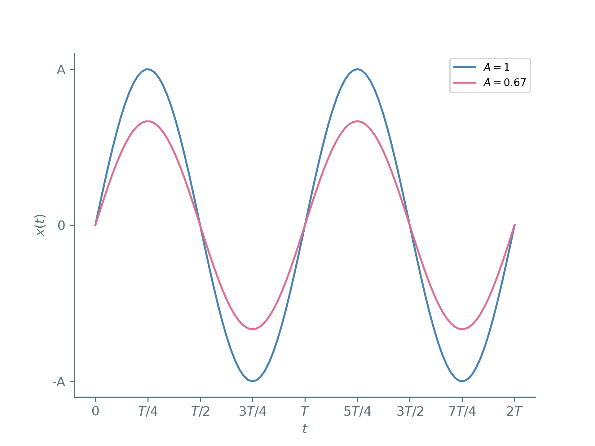
\(\varphi\) é chamada de fase.
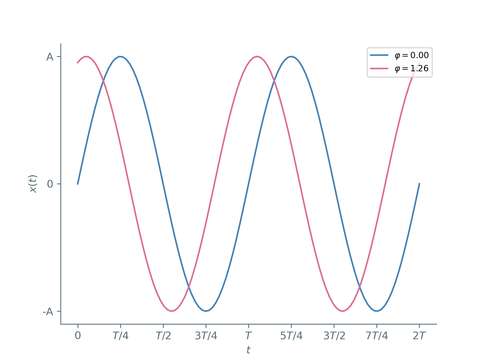
Podemos calcular a energia do sistema como
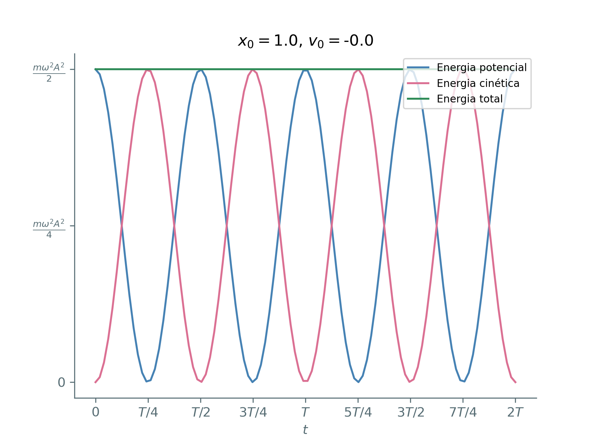
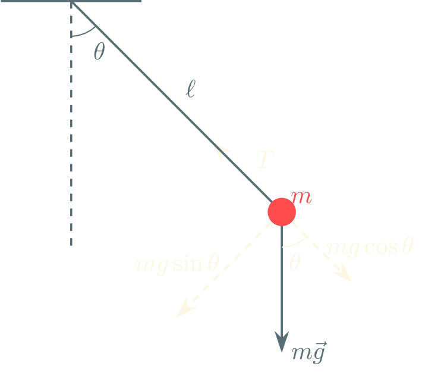
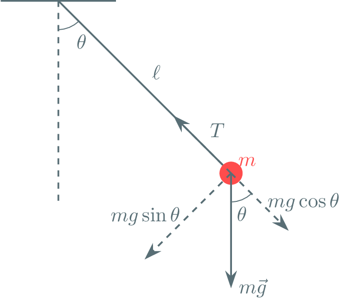
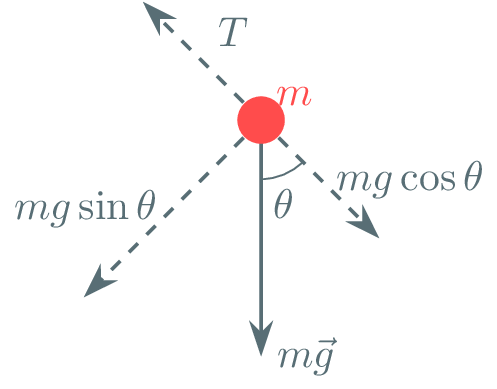
Solução harmônica!
Solução aproximada boa para ângulos pequenos!
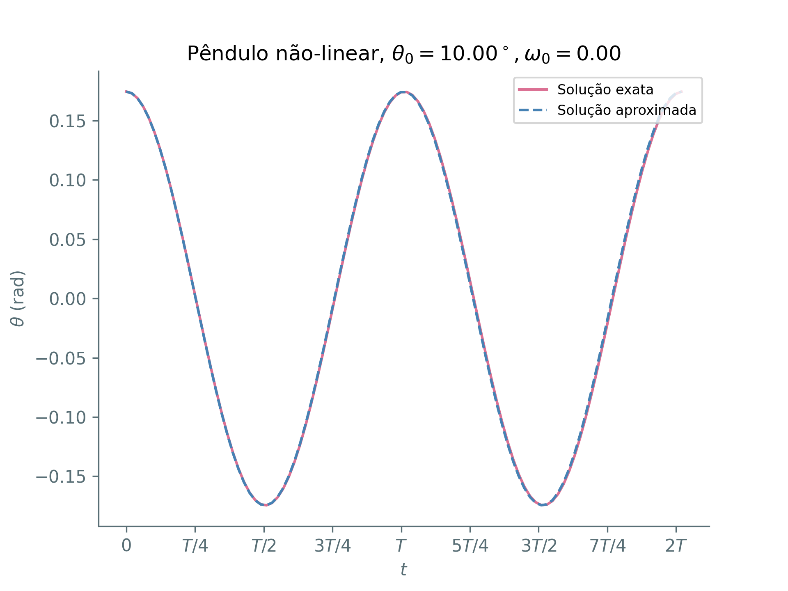
Solução exata diferere para ângulos grandes!
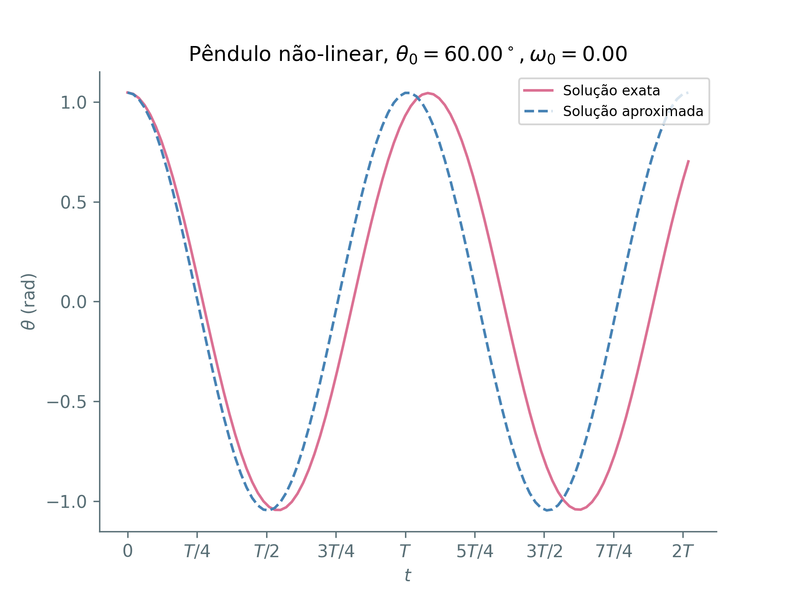
Solução exata diferere para ângulos grandes!
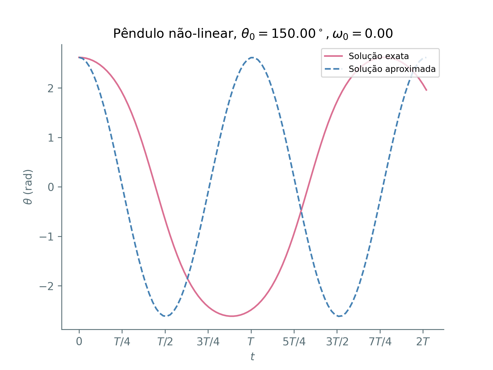
Solução exata diferere para ângulos grandes!